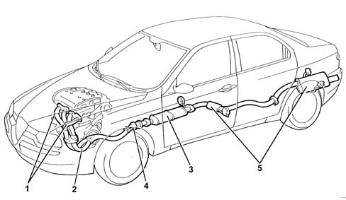
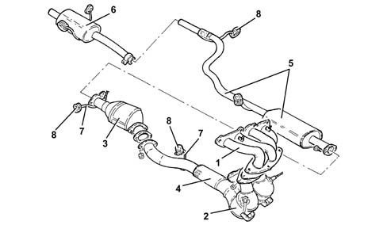
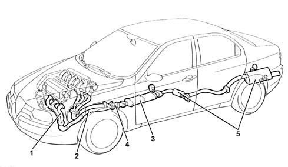
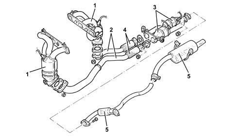
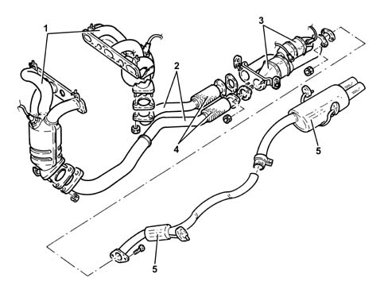
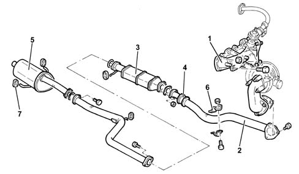
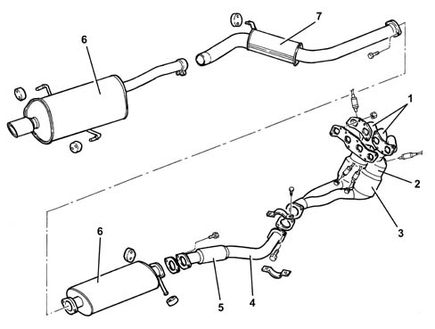
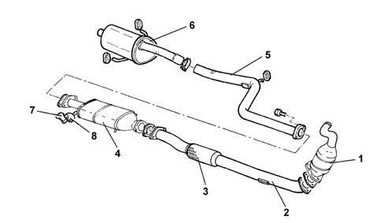
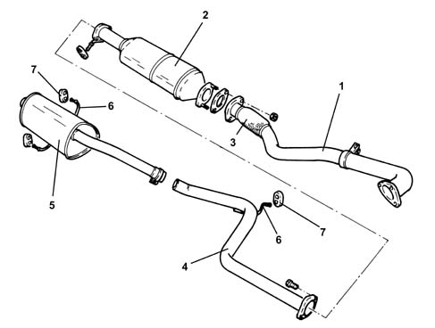

Introduction - EXHAUST PIPES AND SILENCERS
- Path
- Descriptions > 10 ENGINE > 1076 EXHAUST PIPES AND SILENCERS > Introduction - EXHAUST PIPES AND SILENCERS
- Kind
- system description
- Applies to
- engines: 1.6 TS , 1.8 TS, 2.0 JTS, 2.5 V6, 3.2 V6, 1.9 JTD 8v , 1.9 JTD 16v, 2.0 JTS, 2.4 JTD 10v, 2.4 JTD 20v; all production periods
- Interactive page
- https://sloeber94.github.io/elrnDB-a156/en/#/3239197
Applies to: engines: 1.6 TS , 1.8 TS; all production periods
The engine's exhaust gases flow into two double manifolds (1) (steel), and then through two exhaust pipes (2) to the three-way catalytic converter (3) (see 1080).
At the front of the exhaust pipe, there is a flexible component (4) for limiting the transmission of vibrations.
The rear exhaust section comprises two silencers (5).
Special guards limit the radiation of heat towards the body shell.
The various components are supported by mountings and rubber rings secured to the underbody.

Applies to: engines: 1.6 TS , 1.8 TS; all production periods; only with equipment: Euro 3
COMPOSITION
Structure
The engine exhaust gases flow through the manifold (1) to the catalytic preconverter (2) and from there to the three-way catalytic converter (3) ( 1080B exhaust emission control system ).
In the catalytic preconverter, there is a flexible component (4) for limiting the transmission of vibrations.
The rear exhaust section comprises an intermediate silencer (5) and the rear silencer (6).
Special guards limit the radiation of heat towards the bodyshell.
The various components are supported by means of mountings (7) and circlips (8) fixed to the underbody.

Applies to: engines: 2.5 V6; all production periods
The engine exhaust gases flow into two triple (steel) manifolds (1) and then through two exhaust pipes (2) to the three-way catalytic converter (3).
At the front of the exhaust pipe, there is a flexible component (4) for limiting the transmission of vibrations.
The rear exhaust section comprises two silencers (5).
Special guards limit the radiation of heat towards the body shell.
The various components are supported by mountings and rubber rings secured to the underbody.

Applies to: engines: 2.5 V6; all production periods; only with equipment: Euro 3
CONSTRUCTION FEATURES
The engine exhaust gases flow into two triple manifolds (1) with integrated catalytic preconverters and so via two exhaust pipes (2) to the three-way catalytic converters (3).
At the front sections of the exhaust pipe, there are two flexible components (4) for limiting the transmission of vibrations.
The rear exhaust section comprises two silencers (5).
Special guards limit the radiation of heat towards the bodyshell.
The various components are supported by mountings and rubber rings secured to the underbody.

Applies to: engines: 3.2 V6; all production periods
CONSTRUCTION FEATURES
The engine exhaust gases flow into two triple manifolds (1) with integrated catalytic preconverters and so via two exhaust pipes (2) to the three-way catalytic converters (3).
At the front sections of the exhaust pipe, there are two flexible components (4) for limiting the transmission of vibrations.
The rear exhaust section comprises two silencers (5).
Special guards limit the radiation of heat towards the bodyshell.
The various components are supported by mountings and rubber rings secured to the underbody.

Applies to: engines: 1.9 JTD 8v , 2.4 JTD 10v; all production periods
The engine exhaust gases flow through the manifold (1) to the turbocharger and then via a pipe (2) to the oxidizing catalytic converter (3) (see 1080).
At the front of the exhaust pipe, there is a flexible component (4) for limiting the transmission of vibrations.
The rear exhaust section comprises a single silencer (5).
Special guards limit the radiation of heat towards the body shell.
The various components are supported by mountings (6) and rubber rings (7) secured to the underbody.

Applies to: engines: 2.0 JTS, 2.0 JTS; all production periods
CONSTRUCTION FEATURES
The engine exhaust gases flow into two doueble manifolds (1) integral with the catalytic preconverters (2) and the catalytic converters (3) and from there into the front section of the exhaust pipe (4).
The front section of the exhaust pipe contains a flexible component (5) to limit the transmission of vibrations.
The rear section of the exhaust pipe consists of two silencers (6) connected by an intermediate exhaust pipe (7).
Special guards limit the radiation of heat towards the bodyshell.
The various components are supported by mountings and rubber rings secured to the underbody.

Applies to: engines: 1.9 JTD 16v; all production periods
COMPOSITION
Structure
The engine exhaust gases flow through the manifold to the turbocharger and then to the oxidizing catalytic converter (1) 1080B exhaust emission control system
At the front of the exhaust pipe, there is a flexible component (2) for limiting the transmission of vibrations.
The rear exhaust section comprises an intermediate silencer (4), an intermediate pipe (5) and the rear silencer (6).
Special guards limit the radiation of heat towards the bodyshell.
The various components are supported by means of mountings (7) and circlips (8) fixed to the underbody.

Applies to: engines: 2.4 JTD 20v; all production periods
COMPOSITION
STRUCTURE
The engine exhaust gases flow through the manifold to the turbocharger and to the catalytic pre-converter and then via a pipe (1) to the oxidizing catalytic converter (2) 1080B exhaust emission control system .
At the front of the exhaust pipe, there is a flexible component (3) for limiting the transmission of vibrations.
The section of the exhaust comprises an intermediate pipe (4) and the rear silencer (5).
Special guards limit the radiation of heat towards the bodyshell.
The various components are supported by mountings (6) and rubber rings (7) secured to the underbody.
